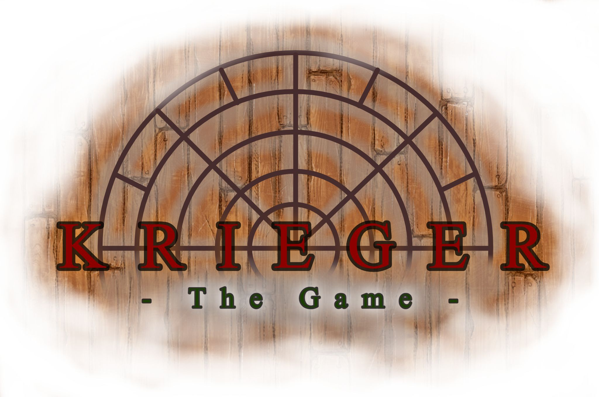
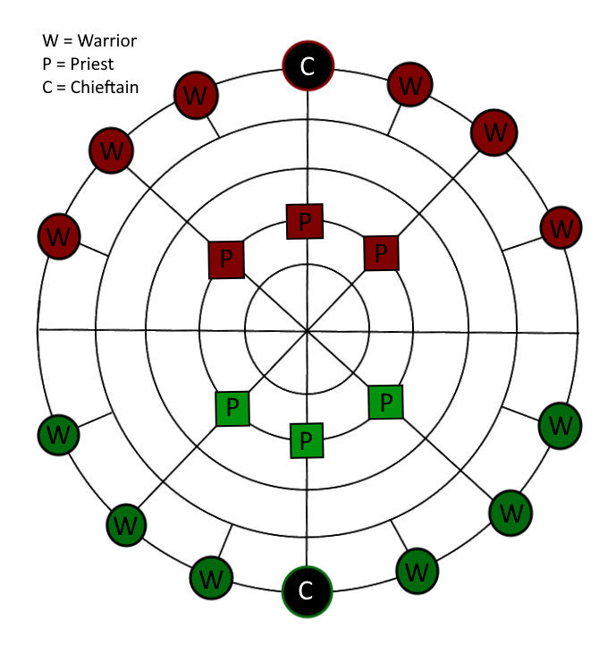
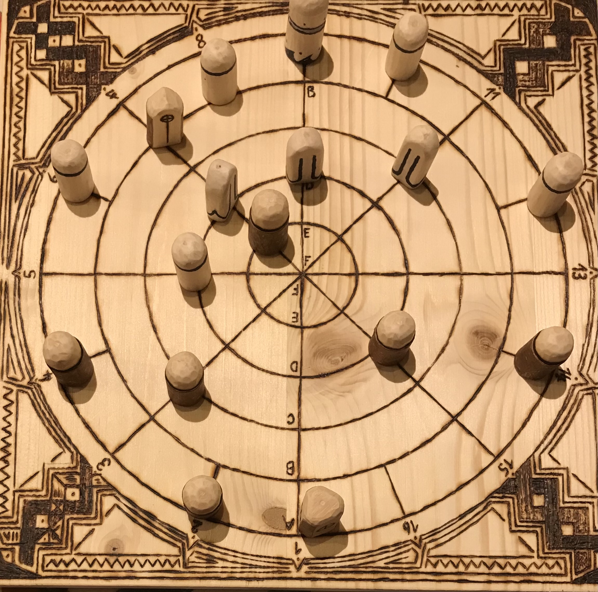
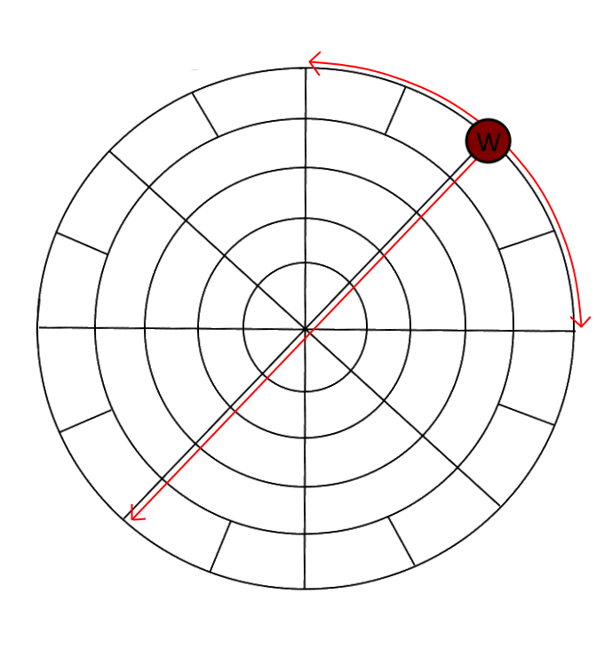
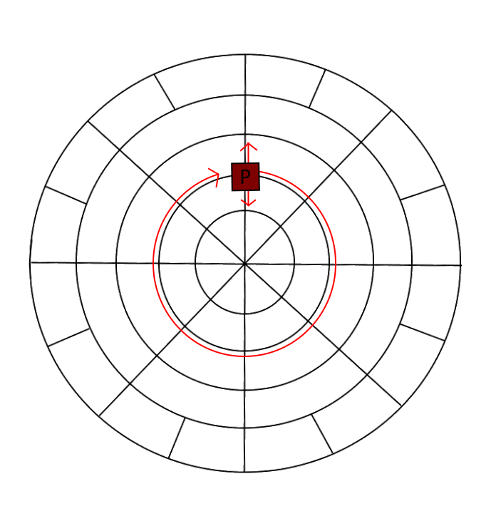
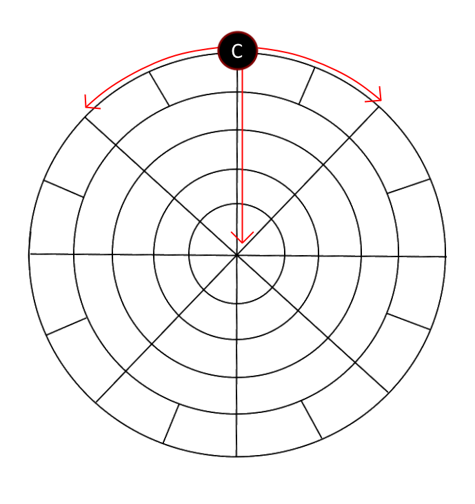

<html lang="en"></html>
<head>
    <meta charset="UTF-8">
    <meta name="viewport" content="width=device-width, initial-scale=1.0">
    <title>Krieger game rules</title>
    <link rel="icon" href="kriegerBilder/Krieger_Logo_V1.jpg" type="image/icon type">
    <style>
        body {
            text-align: center;
          color: black;
          background-repeat: no-repeat;
          margin-bottom:5px;
          background-attachment: fixed;
          background-size: cover;
          background-size: 100% 100%;
          background-color: white;                        
          font-family: Arial, Helvetica, sans-serif;
          line-height: 1.8;
        }
        .picture{

            float:right;
        }
        h3{

            font-size: 20px;
            color: rgb(35, 21, 4);
        }
        .grelement{
            display:grid;
            grid-template-columns: 60% 20%;
            grid-template-rows:  25% 25% 25% 25%;
            grid-gap:5px;
            margin-left: 20%;
        }

        .logo{
            width:50%;
            margin-left: 25%;
        }
        
        </style> 
</head>
<body>
    <div class="logo">
        
    </div>
<br>
    <hr>

    <div>


        <h3>Structure:</h3>
            <div class="grelement">

            Each player has 10 figures:<br>
            6 warriors, 3 priests and 1 chieftain.
            
            The goal of the game for each player is either to move their own chieftain to the centre of the playing field or to take the opponent's chieftain with one of their own warriors.
            
            However, a chieftain can only be moved and/or captured when the same player has none of his own priests left in the game.
        </div>
        <div class="grelement"><br></div>
        <h3>Placement at start of the game:</h3>
        <div class="grelement">

            Pieces are placed at the points on the playing field where the lines that form it intersect.
            These places are referred to as ''spaces'' in the further instructions.
            
            The chieftains are placed at opposing ends of the vertical straight line of the playing field. This line is so called ''Main Line''.
            The warriors are placed to either sides of the chieftains - three to the left and three to the right.
            The priests are placed on the second ring from the center with the horizontal line left clear. This line is called ''Cross Line''.
            
        </div>

        <h3>Start of the game</h3>
        <div class="grelement">

The starting player is decided at random or an agreement is reached.
The most common method is a coin toss.

From then on, the players take turns to move one of their pieces.
This is a compulsory move - players are not allowed to forgo their turn.
</div>
<h3>Moving the figures</h3>
<div class="grelement">

Pieces are being moved across the playing field in different ways.
With the exception of „taking“ (see below), other pieces can not be jumped over.

When a piece is drawn, it can be moved along the circle or the straight line it is currently on. It cannot be moved in both ways on the same turn.

</div>
<h3>Warrior:</h3>
<div class="grelement">

If a warrior is moved, it can only be moved one or two spaces further along the circles.
However, a warrior may be moved any distance along the straight lines.

Warriors are also the main pieces that are used to ''take'' other pieces.
To do this, the taking warrior jumps over a piece of the other player that is on a space neighbouring the warrior and is placed on the corresponding space behind it.
The piece that was jumped over is removed from the game.
If the opposite space is blocked by another piece, it cannot be taken.
Only one piece can be taken per turn.

</div>
<h3>Priest</h3>
<div class="grelement">

If a priest is moved, it may be moved along the circles as far as the player wants.
On the straight lines, however, it can only move one space per turn.
If all of a player's priests have been taken, the chieftain of this player becomes „released“.

A priest can also be used to do an ''offjump'' in which the priest takes an opponents piece that is located on a space on the most outer ring of the playing field. It can do so only by starting the move on the second inner ring and so on jumps to the outside of the playing field, which causes the priest to also be removed from the game.

</div>
<h3>Cheftain</h3>
<div class="grelement">

This figure starts the game in a ''bound'' state. This means that it can neither be taken nor moved.

If a player loses all of their priests, their cheftain is ''released''.
From this moment on, the released chieftain can be moved, but may also be taken by the opponent's warriors.
It can move in the same way as a warrior (maximum 2 spaces on the rings, any distance on the straight lines).
However, it is not able to take any other pieces.

A player who moves his chieftain to the centre space of the board wins the game.
If the chieftain is taken, the player loses the game immediately.

</div>

    </div>

 

    
</body>
</html>